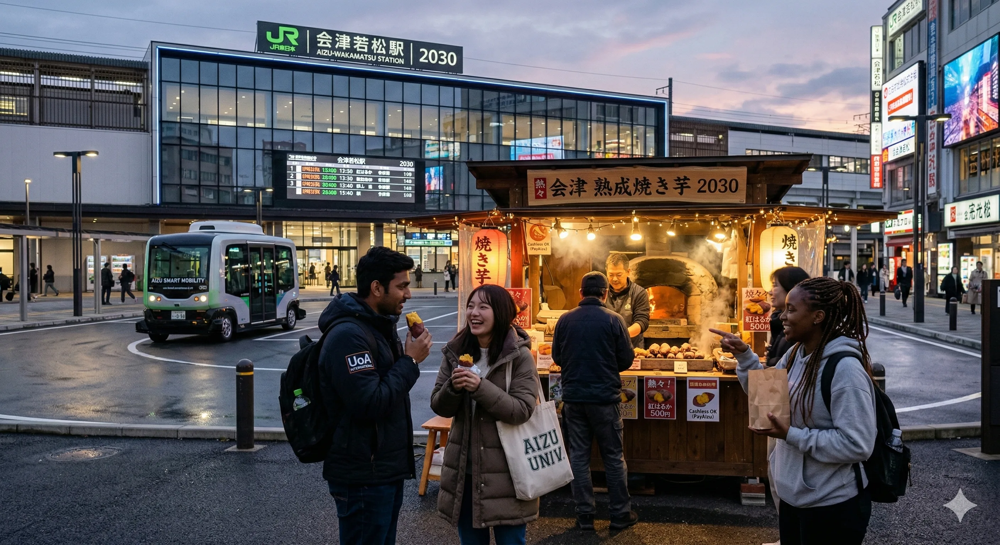
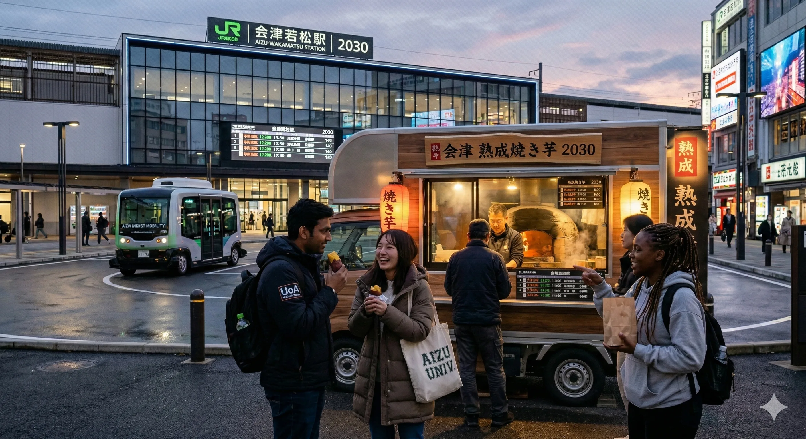
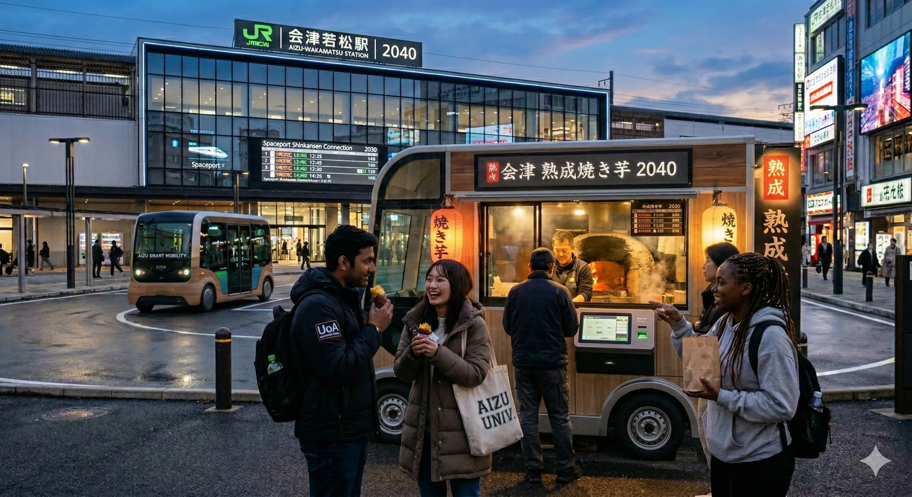
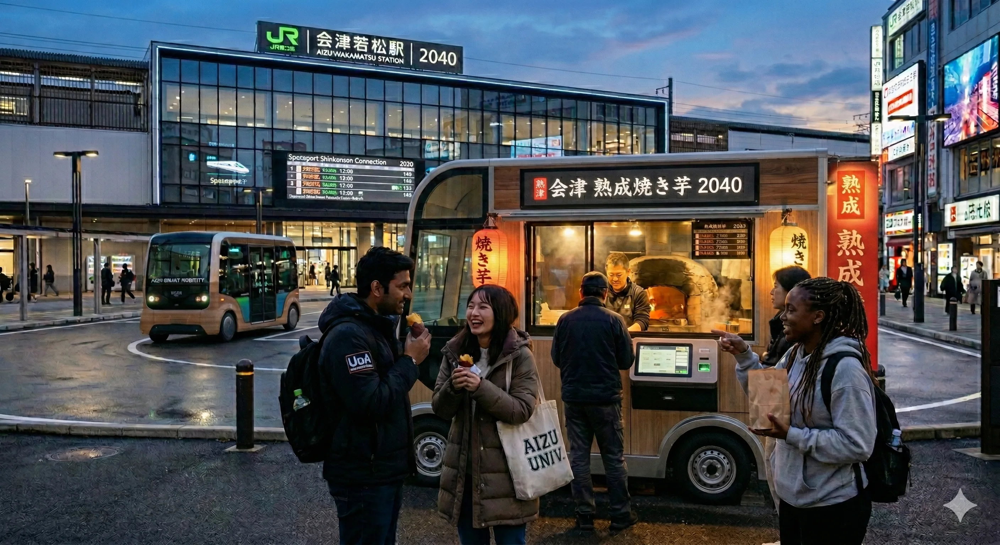
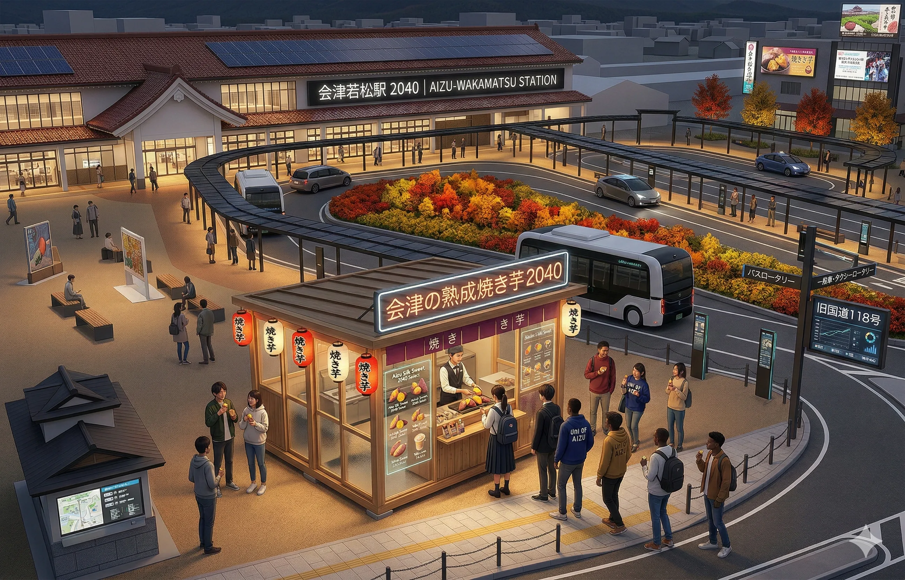
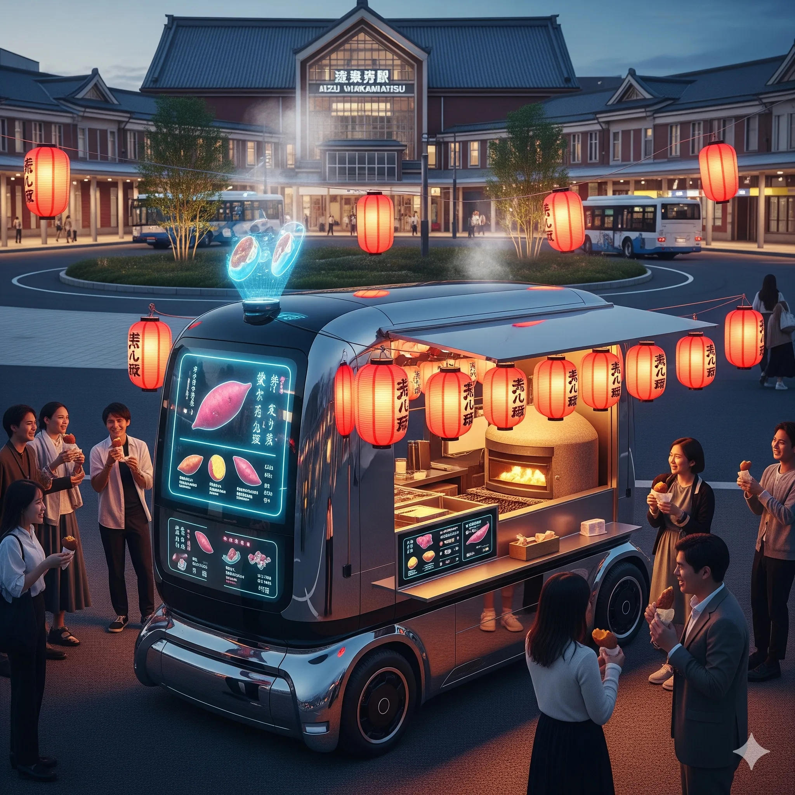

画像生成
グループDは「未来の焼き芋屋さん」をテーマに、生成AIで画像を制作しました。
プロンプト（AIへの指示文）を少しずつ改良しながら6回にわたって画像を生成し、理想のイメージに近づけていった過程をご覧ください。
PROMPT EVOLUTION
2030年の焼き芋屋さんを描く
2030年の焼き芋屋さんの画像を生成して2030年の焼き芋屋さんの近くには、若い会津大生で留学生がちらほらいますリアルな画像でお願いします。若松駅が5年分発展した状態です。ちょっと発展しているっていう感じです。その前に焼き芋屋さんがあります。

まずは2030年の近未来を想定。会津若松駅前に焼き芋屋さんがあり、留学生が集まるイメージ。しかし焼き芋屋の見た目が少し不自然に...
キッチンカーに変更
焼き芋屋が不自然です。焼き芋屋をキッチンカーにしてください。

不自然だった焼き芋屋を「キッチンカー」という具体的な形に指定。AIへのフィードバックで出力を改善する第一歩。
2040年 — 自動運転の時代へ
2040年は自動運転が当たり前になっています。運転席がない車のキッチンカーバージョンにしてください。2040年の焼き芋屋さんの画像を作成してください。

時代を2040年に進め、自動運転という技術的な進化を盛り込んだ。「運転席がない車」という具体的な指示でAIの出力をコントロール。
細部の修正
熟成と熟成が二重に表示されているのが気になります。

AIが生成した画像内のテキストに不具合を発見。ピンポイントで修正を依頼。AIは日本語テキストの描画が苦手なことが多い、という気づきも。
会津若松駅前のロケーション指定
この画像を参考に会津若松駅前にある2040年の焼き芋屋さんの画像を作成してください。

前回の出力を参考画像として渡し、場所を「会津若松駅前」に明確に指定。AIとの対話を重ねることで、より意図に近い画像に。
完成 — 2050年、未来の焼き芋屋さん
先ほどの画像が2030年の状態です。これを2050年の画像にしてください。20年進化しています。20年分の進化を画像に反映してください。焼き芋屋さんの画像がイラスト調になっています。リアル感のある画像にしてください。焼き芋屋さんを移動販売式にしてください。

最終プロンプトでは2050年まで一気に進化。リアル感・移動販売というスタイル指定も加え、6回のプロンプト改良の集大成に。
WORK INFO
テーマ：未来の焼き芋屋さん — 2030年から2050年への進化
使用ツール：Gemini
プロンプト回数：6回
コンセプト：会津若松駅前を舞台に、焼き芋屋さんの姿を2030年→2040年→2050年と段階的に未来へ進化させる。プロンプトを少しずつ改良しながら、AIとの対話を通じて理想のイメージに近づけていく過程を体験。
NOTE
プロンプトを少しずつ改良することで、AIの出力がどのように変化するかを体験的に学ぶことがこのワークショップの目的です。